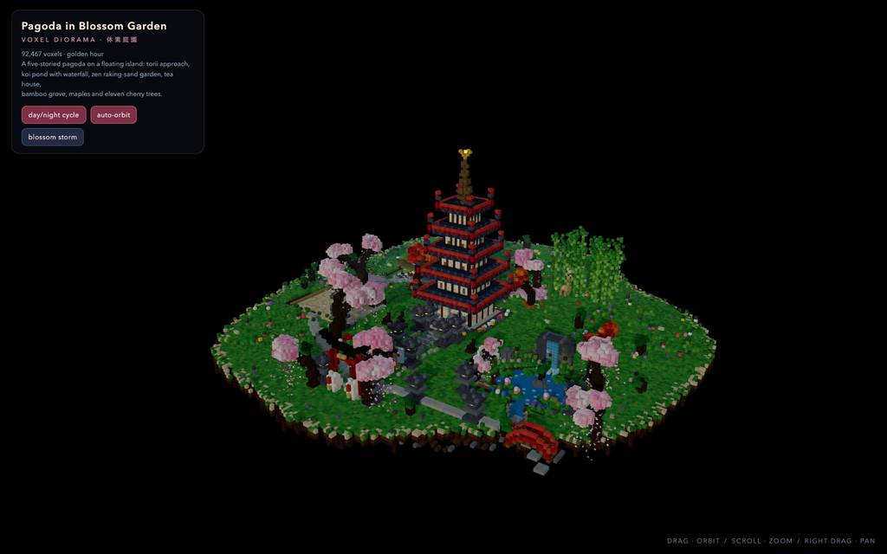
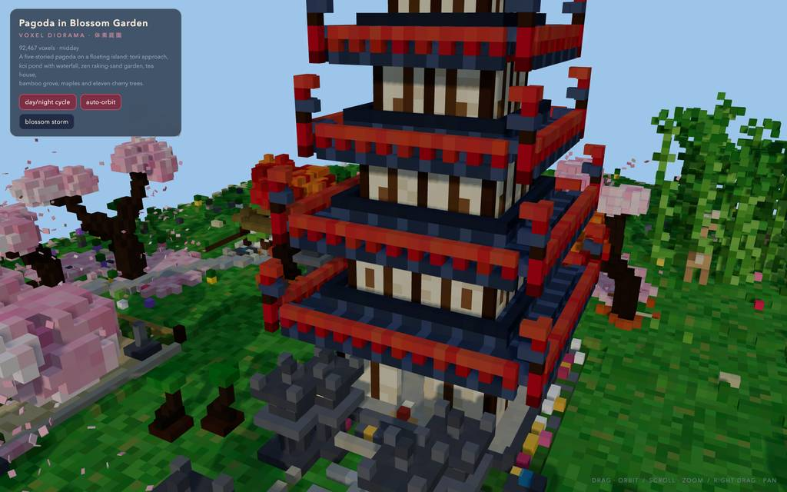
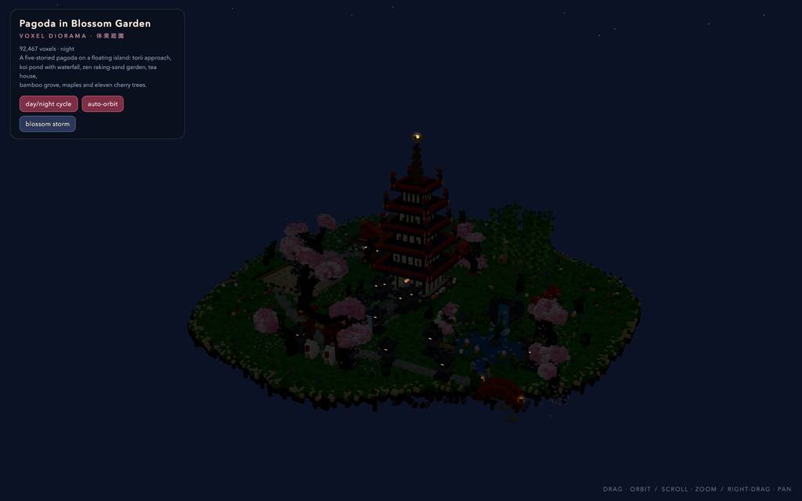
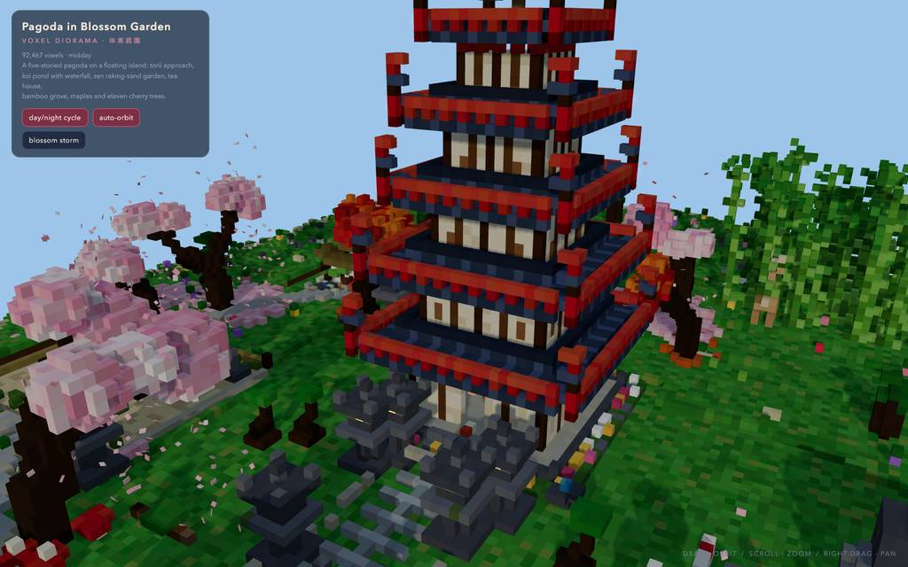
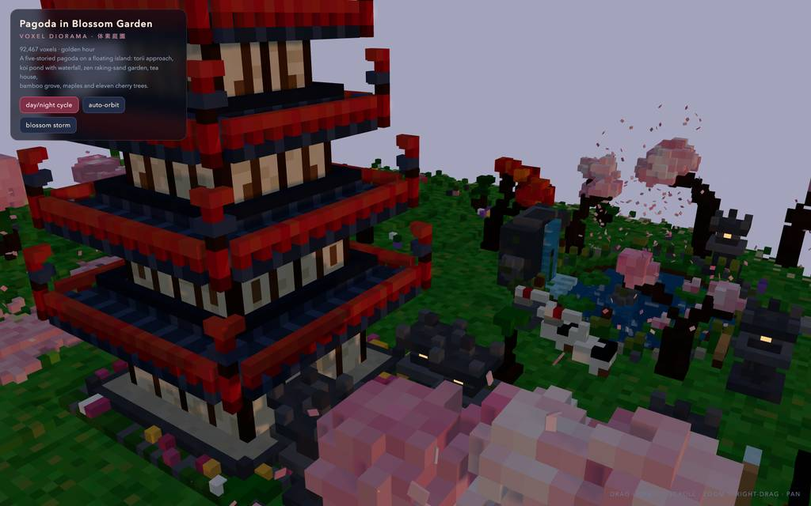

runs / 2026-10-26 / 134828-162000-strata-qwen3.8-fn-q4-bea1d5f1
54KBのボクセル五重塔庭園HTMLを33分で完成、生成と検証に二分
qwen3.8-flash-next-unsloth-ud-q4_k_xl（llama.cpp、Strata 0.1.48）が37コール・総経過1,979.15秒で、単一ファイルのボクセル五重塔庭園 pagoda-garden.html（54,380バイト）を生成し completed（exit 0）で終えた。前半の #2〜#4 で約1,362秒を大型書き出し2回に費やし、後半は修正・構文点検・ブラウザ検証（eval 12回、shot 11枚）に充てた。最終メッセージでは console エラー 0・85 FPS・92,467体素を報告している。
成果物
work/pagoda-garden.html（54,380 バイト）をそのまま同梱している。重いシーンもあるため、必要なときだけ起動する。
pagoda-garden.html
53 KB · 起動するまで読み込まない











logs/events.jsonl の画像ブロックを内容ハッシュで重複排除して時系列に並べた、制作中の検証用スクリーンショット。最終版とは限らない。
成果物の構成
| 要素 | 内容 |
|---|---|
| 全体構成 | 92,467 体素の浮遊島ジオラマを単一 HTML（約54KB）に収め、three.js CDN の import map でのみネット接続が必要 |
| 五重塔 | 反り屋根に朱の斗拱、20個の下がり灯籠、青銅の九輪と金宝石、開いた門越しに蓮と光背の金仏 |
| 鳥居参道 | 縮小する三つの鳥居トンネル、狐番、幟、窓が発光する苔の石灯籠14基（夜間加算合成ハロー） |
| 水回り | 深さ勾配の鯉池、幅4の滝と渓流、朱の拱橋と六体の動く鯉、二羽の丹頂 |
| 庭園 | 同心円の砂紋の禅庭、障子と縁側の茶室、節付き竹34本、礼をする鹿を含む奈良の鹿2頭 |
| 植物と人物 | フラクタル分枝の桜11本と花びら絨毯、松13、皐月、蓮、歩行の僧と初心者、盆栽三卓 |
| 時間演出 | 150秒の昼夜サイクル（日月盤・星・萤火）、900枚の花びらと嵐ボタン、?p=0..1 で時刻上書き |
| 検証結果 | headless Chromium 1440×900 で console エラー 0、85 FPS、正午・黄金時・夜景・嵐のスクショ確認、材質クラスごとに instanced 描画 |
モデルの最終メッセージから読み取った内容。コードの確認はしていない。
タイムライン
37 回の API 呼び出しを時間順に並べた。上段の帯の幅が各呼び出しの所要時間で、帯の間の空白がツールの実行時間。下段はその時点のコンテキスト長。細い帯は、エージェントが別に投げた補助リクエスト（画像判定など）。 upstream が usage を返さない場合は、events.jsonl の message_end から復元する。復元できない値は ? で示す。
最も長い 2 回の生成（#4 614 秒・#3 419 秒）で 1033.5 秒、壁時計の 52.2%。出力トークンの上位 4 回（#4・#3・#2・#5）で全体の 77.8%（81,145 / 104,308）。推論以外（ツール実行など）は約 43 秒（2%）。
フェーズ別の内訳
| フェーズ | 経過 | 所要 | 全体に占める割合 | 呼び出し | 出力 tok | 何をしたか |
|---|---|---|---|---|---|---|
| 構想と初稿 | 0:00–22:42 | 1362 秒 | 68.8% | 4 | 79,156 | 補助コール後にディレクトリ確認と計画（#2）、single-file シーンを 26,706 トークンで書き（#3）、続けて clean 版を 35,364 トークンで再書き込み（#4）。 |
| 細部の修正 | 22:42–24:30 | 108 秒 | 5.4% | 7 | 4,578 | halo ループ、石灯籠の苔、僧の接地を短い edit と grep で順に修復。REM による行削除が拒否され（E1）再検索後に再編集した。 |
| 初検証・構文点検 | 24:30–25:08 | 39 秒 | 2.0% | 5 | 1,651 | 抽出スクリプトを bash で構文チェックし、ブラウザでページを読み込みビルド状態を確認、デフォルトビューのスクリーンショットを取得。tab.console() の filter 失敗（E2)が発生。 |
| 描画後の調整 | 25:08–27:30 | 142 秒 | 7.2% | 5 | 7,106 | 太陽の軌道を視点側へ傾け重複行を削除、todo 再同期と grep を挟み、滝を広げ縁岩を修正し夜景 URL パラメータを追加した。 |
| 昼夜の検証 | 27:30–29:22 | 112 秒 | 5.7% | 5 | 4,695 | 昼ビュー再読込後に daylight 関数を読み、環境光と空背景の更新を復元する edit を実施。昼の拡大点検、夜と嵐のテストまで確認。 |
| 夜景追加と性能 | 29:22–32:23 | 180 秒 | 9.1% | 7 | 5,795 | 月明かりと月盤の edit が未表示行参照で却下され（E3）再実行で反映。続く eval で FPS、池の接写、hero ビュー、デフォルト回帰を確認（E4: 座標スケール注意）。 |
| クロージング | 32:23–32:58 | 36 秒 | 1.8% | 4 | 1,327 | todo で完了をクローズし 5 項目を一括同期、テストタブを解放して最終報告を作成。 |
フェーズの切れ目は、ログから読み取れる作業内容の変わり目（LLM による区切り）。所要時間は、そのフェーズの最初の呼び出しの開始から次のフェーズの最初の呼び出しの開始まで。
37 回の呼び出しを表で見る
| # | 種別 | フェーズ | 開始 | 所要 秒 | prompt | うち cache | 出力 | tok/s | HTTP | ツール |
|---|---|---|---|---|---|---|---|---|---|---|
| 1 | 補助 | 構想と初稿 | 0:00 | 11.1 | 180 | 0 | 549 | 57.5 | 200 | — |
| 2 | 主ループ | 構想と初稿 | 0:00 | 328.0 | 8,001 | 7,812 | 16,537 | 52.3 | 200 | todo + bash |
| 3 | 主ループ | 構想と初稿 | 5:28 | 419.3 | 24,787 | 24,539 | 26,706 | 63.8 | 200 | write |
| 4 | 主ループ | 構想と初稿 | 12:28 | 614.2 | 51,535 | 24,782 | 35,364 | 58.6 | 200 | write |
| 5 | 主ループ | 細部の修正 | 22:42 | 61.4 | 86,942 | 51,530 | 2,538 | 53.4 | 200 | edit |
| 6 | 主ループ | 細部の修正 | 23:43 | 12.0 | 89,675 | 86,937 | 531 | 53.1 | 200 | grep |
| 7 | 主ループ | 細部の修正 | 23:55 | 7.0 | 90,544 | 90,206 | 317 | 52.5 | 200 | edit |
| 8 | 主ループ | 細部の修正 | 24:03 | 10.9 | 91,306 | 90,862 | 531 | 54.4 | 200 | edit |
| 9 | 主ループ | 細部の修正 | 24:13 | 5.0 | 92,127 | 91,836 | 188 | 47.2 | 200 | edit |
| 10 | 主ループ | 細部の修正 | 24:18 | 3.4 | 92,345 | 92,316 | 134 | 47.0 | 200 | grep |
| 11 | 主ループ | 細部の修正 | 24:22 | 7.7 | 92,819 | 92,478 | 339 | 50.5 | 200 | edit |
| 12 | 主ループ | 初検証・構文点検 | 24:30 | 4.9 | 93,494 | 93,157 | 211 | 55.2 | 200 | bash |
| 13 | 主ループ | 初検証・構文点検 | 24:35 | 8.5 | 93,733 | 93,705 | 405 | 50.1 | 200 | read |
| 14 | 主ループ | 初検証・構文点検 | 24:43 | 10.9 | 97,342 | 94,139 | 505 | 57.4 | 200 | eval |
| 15 | 主ループ | 初検証・構文点検 | 24:56 | 5.4 | 98,192 | 97,847 | 238 | 53.9 | 200 | eval |
| 16 | 主ループ | 初検証・構文点検 | 25:01 | 6.8 | 98,495 | 98,429 | 292 | 50.5 | 200 | eval |
| 17 | 主ループ | 描画後の調整 | 25:08 | 50.7 | 99,541 | 98,787 | 2,469 | 50.1 | 200 | edit |
| 18 | 主ループ | 描画後の調整 | 25:59 | 4.4 | 102,221 | 102,011 | 175 | 49.4 | 200 | edit |
| 19 | 主ループ | 描画後の調整 | 26:03 | 44.2 | 102,596 | 102,395 | 2,269 | 52.5 | 200 | todo + grep |
| 20 | 主ループ | 描画後の調整 | 26:48 | 2.8 | 105,628 | 104,865 | 81 | 55.5 | 200 | read |
| 21 | 主ループ | 描画後の調整 | 26:51 | 39.8 | 106,452 | 105,709 | 2,112 | 54.9 | 200 | edit |
| 22 | 主ループ | 昼夜の検証 | 27:30 | 7.6 | 109,041 | 108,565 | 353 | 54.6 | 200 | eval |
| 23 | 主ループ | 昼夜の検証 | 27:42 | 34.1 | 110,182 | 109,394 | 1,661 | 51.1 | 200 | read |
| 24 | 主ループ | 昼夜の検証 | 28:16 | 27.5 | 112,584 | 110,177 | 1,350 | 53.0 | 200 | edit |
| 25 | 主ループ | 昼夜の検証 | 28:44 | 15.1 | 114,136 | 113,934 | 757 | 53.6 | 200 | eval |
| 26 | 主ループ | 昼夜の検証 | 29:05 | 12.4 | 116,396 | 114,893 | 574 | 55.1 | 200 | eval |
| 27 | 主ループ | 夜景追加と性能 | 29:22 | 38.2 | 117,817 | 86,937 | 1,303 | 50.8 | 200 | edit |
| 28 | 主ループ | 夜景追加と性能 | 30:01 | 8.2 | 119,308 | 119,120 | 397 | 55.0 | 200 | edit |
| 29 | 主ループ | 夜景追加と性能 | 30:09 | 13.3 | 120,167 | 119,705 | 654 | 53.9 | 200 | eval |
| 30 | 主ループ | 夜景追加と性能 | 30:26 | 17.6 | 121,144 | 103,321 | 521 | 56.2 | 200 | eval |
| 31 | 主ループ | 夜景追加と性能 | 30:51 | 25.8 | 121,783 | 103,321 | 907 | 52.2 | 200 | eval |
| 32 | 主ループ | 夜景追加と性能 | 31:20 | 29.4 | 122,789 | 103,321 | 1,058 | 51.1 | 200 | eval |
| 33 | 主ループ | 夜景追加と性能 | 31:51 | 27.3 | 123,959 | 103,321 | 955 | 51.8 | 200 | eval |
| 34 | 主ループ | クロージング | 32:23 | 13.8 | 125,029 | 103,321 | 229 | 49.2 | 200 | todo |
| 35 | 主ループ | クロージング | 32:36 | 5.8 | 125,501 | 125,259 | 308 | 62.4 | 200 | todo + todo + todo + todo + todo |
| 36 | 主ループ | クロージング | 32:42 | 3.8 | 126,686 | 125,809 | 117 | 47.0 | 200 | eval |
| 37 | 主ループ | クロージング | 32:46 | 12.0 | 126,827 | 126,803 | 673 | 58.3 | 200 |
試行錯誤
ツールがエラー（isError）を返した結果の一覧。ツールは成功したのにモデル自身が内容を壊したケースは、ここには出ない。
エラーとして記録された 4 件
| 経過 | ツール | 起きたこと | 分類 |
|---|---|---|---|
| 24:18 | edit | REM で行削除を試みたが REM はファイル全体を消す指定で line ops と併用できず編集が拒否された。`REM` deletes the whole file and cannot be combined with line ops. | edit 誤用 |
| 24:54 | eval | eval で tab.console() の結果に対し filter を呼んだが関数ではなく検証コードが失敗した。Opened tab "pagoda" on headless browser (hidden, shared) URL: file://~ Title: 五重塔の庭 — Voxel Pagoda Garden Diorama TypeError: (await tab.console()).filter is not a function. | API 誤用 |
| 30:01 | edit | 一度も表示していない行番号 897-898 をアンカーに edit を試み、ファイル実内容と照合できず拒否された。This edit anchors to lines 897-898 of pagoda-garden.html that [pagoda-garden.html#04E3] never displayed (it showed a partial range, a search hit, or a folded summary). Actual file content at those lin | 編集アンカー誤り |
| 30:22 | eval | スクリーンショット結果に、表示画像座標は viewport CSS 座標換算に 1.41 倍が必要という注記が付いた。Screenshot captured Format: image/jpeg (32.28 KB) Dimensions: 1024x640 [Image: original 1800x1125 at capture scale 1.25, displayed at 1024x640. Multiply image coordinates by 1.41 to get viewport CSS p | 座標スケール注意 |
経過は、そのツールを呼んだターンの終了時刻。エラー本文は先頭 300 文字までで、パスや接続先は伏せてある。
気づいた点
計測データ（呼び出し一覧・エラー・最終メッセージ）だけから LLM が書いた読み取り。文中の数値は、上の KPI や表と照らして確認する。
生成トークンは前半3コールに集中
#2〜#4 の合計 78,607 トークンは全体の 104,308 の約75%を占め、#4 単体で 35,364 トークン。時間でも #3+#4 の 1,033.5 秒が総経過 1,979.2 秒の約52%を占め、以降は #5 以降 188〜2,469 トークンの小さいコールが続く。
初稿直後に全面書き直し
#3 で single-file を書き切った直後、#4 で 'Rewriting clean single-file scene' と再書き込みが発生。#4 は decode 603.7 秒（prefill 10.4 秒）と全実行で最長の単一コールで、初稿がそのまま使えなかったことがうかがえる。
小刻みな修正が7連発
#5〜#11 の 7 コールは合計 107.4 秒・約 4,578 トークンで、halo ループ・灯籠苔・僧接地を edit と grep で反復。うち E1 の REM 誤用で 1 回やり直し、#10 の grep 後に #11 で同じ接地修正を再適用している。
検証は eval 12回・shot 11枚
後半は eval 主体で、読み込みエラー確認（#14）、ビルド状態（#15）、昼夜・嵐・夜景（#22〜#26、#29）、FPS・池接写・回帰（#30〜#33）を順に実施。E2 の API 誤用は #15 の別確認へ切り替えて回復した。
後半キャッシュ不動でプリフィル増
#30〜#34 で cache が 103,321 に張り付き ctx は 121,144〜125,029 へ増加、prefill も 8.1〜8.9 秒へ上がった。ピークコンテキスト 126,827 は 524,288 ウィンドウの約24%。
入力と設定
Design and create a very creative, elaborate, and detailed voxel art scene of a pagoda in a beautiful garden with trees, including some cherry blossoms. Make the scene impressive and varied and use colorful voxels. Add as many details as possible to showcase your attention to them. Use whatever libraries to get this done but make sure I can paste it all into a single HTML file.
input/prompt.md の全文。SHA-256 は ceece4685b37…。
| omp の起動オプション | --print --mode json --thinking high --no-title --approval-mode yolo |
| upstream | （接続先は伏せている） |
| タイムアウト | 43,200 秒 |
config/00-omp.yml
setupVersion: 2 autolearn: enabled: false autoContinue: false